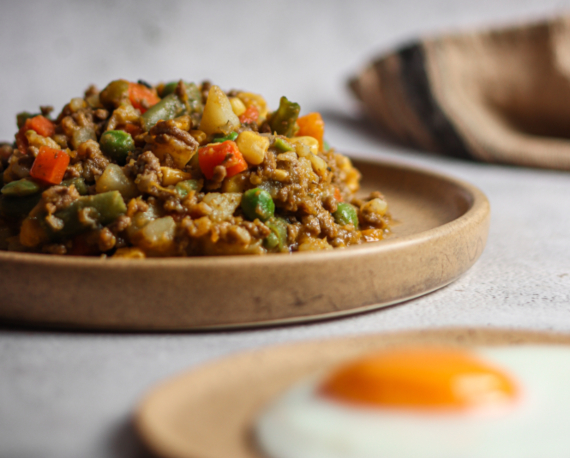

El charquicán es un guiso tradicional en la gastronomía de Bolivia, y presente también en Chile y Peru. Un plato similar que se consume en el noroeste de Argentina es el Charquisillo, hecho con charqui y queso.
Ingredientes: